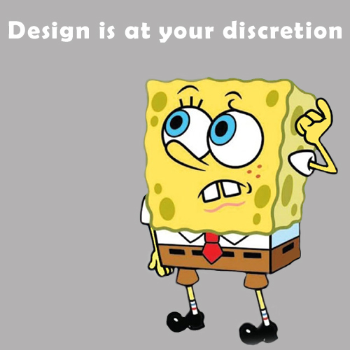
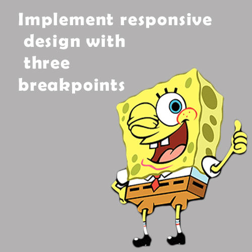
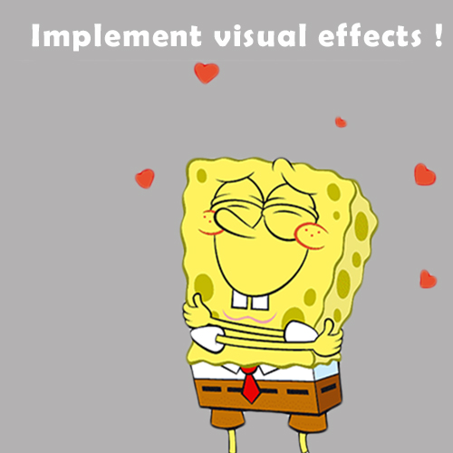
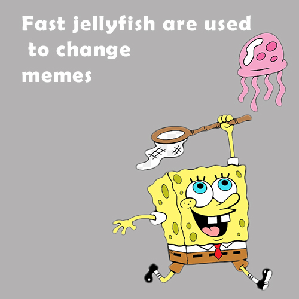

1. Design is at your discretion

2. Implement responsive design with three breakpoints

3. There should be icon for state of
4. Implement visual effects when the cursor

5. Smooth transitions are applied for changing of memes
